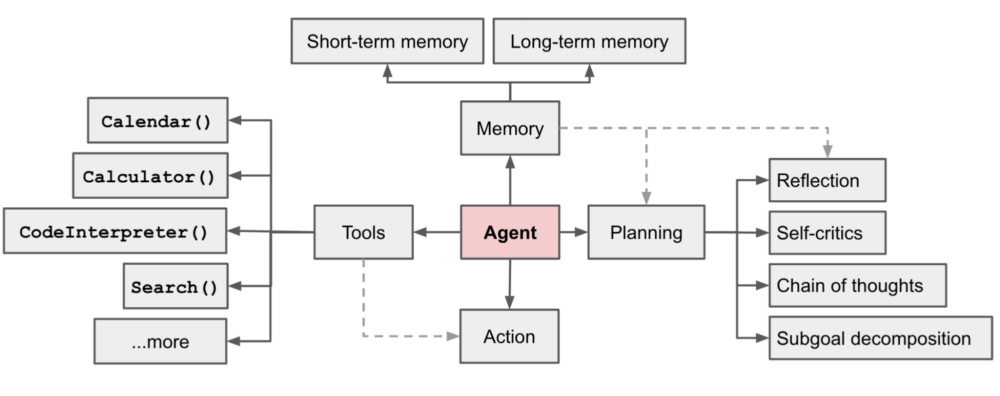
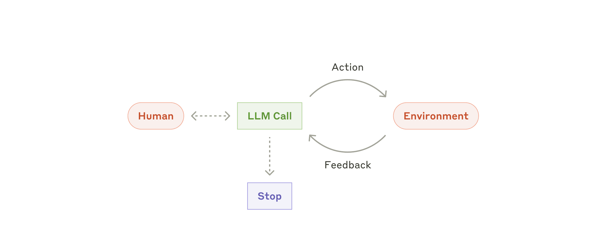
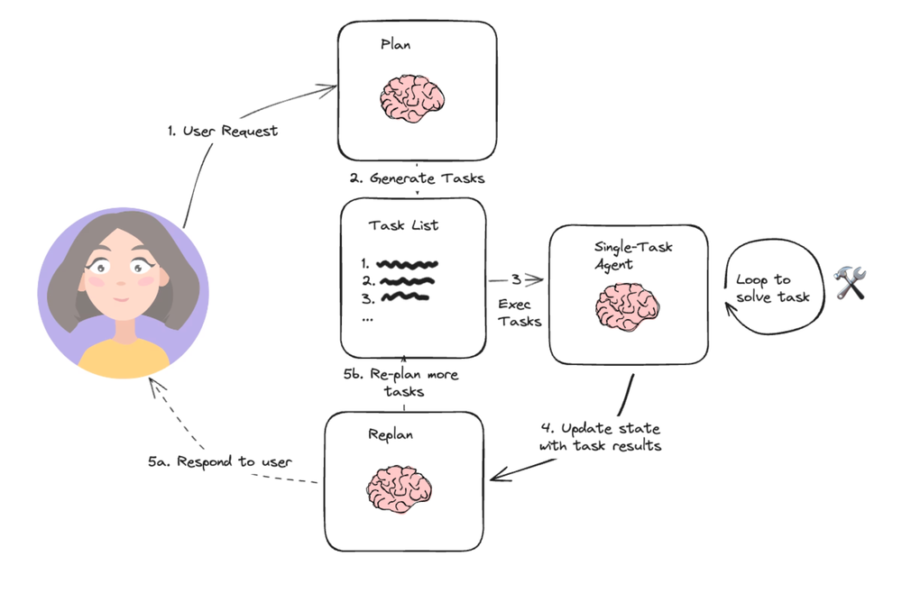
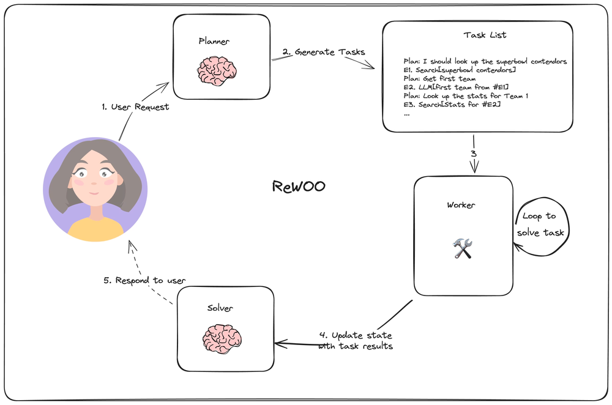
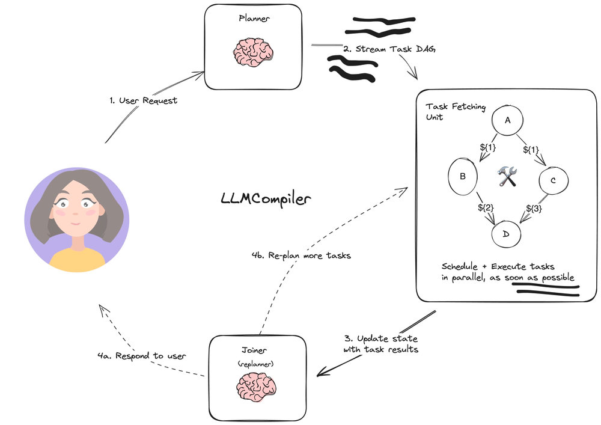
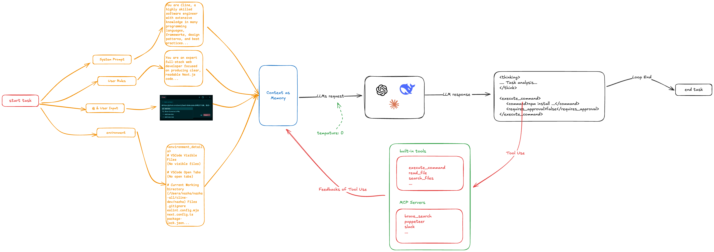
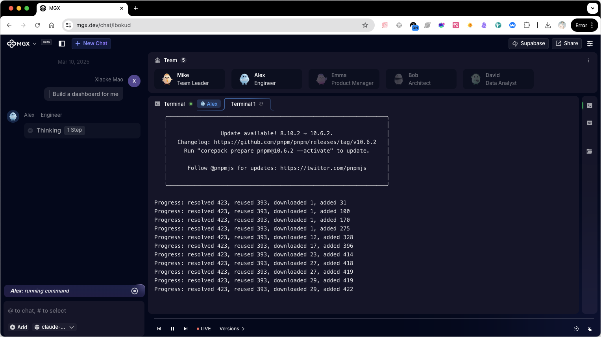
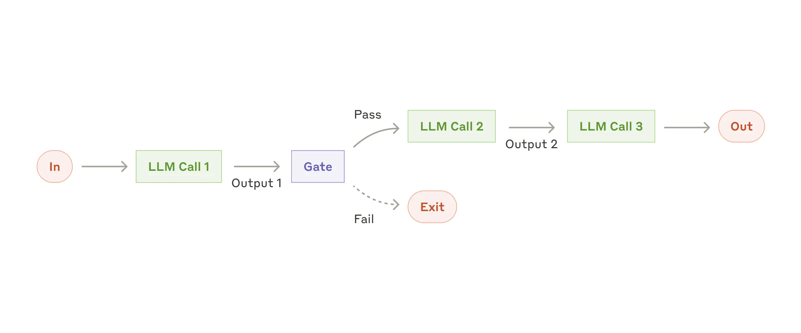

智能体，从 ReAct 到多智能体
Agent （代理）具有非常“广泛”的概念，在深度学习领域，Agent 指的是一个能够推理、规划和与其环境交互的人工智能实体（模型）。
Agent 的概念最初来源于哲学，是具有行动能力的实体。
在 Marvin Minsky 老爷子的 Society of Mind 理论中，定义 Agent 为一个自主、独立运行的计算或认知实体，它具备感知、决策和执行任务的能力。每个Agent 都有自己的目标、行为和策略，并能与其他 Agent 交互和协作。
想象一下未来，你的智能管家 Alfred 收到一个指令：帮我买一杯咖啡。Alfred 收到指令，然后规划出一系列行动：
- 走到厨房
- 使用咖啡机煮咖啡
- 把煮好的咖啡端回来
接着，它必须执行这些动作。如果它发现厨房没有咖啡机，还可能会主动前往仓库寻找或者在购物网站上购买。最终，无论采取怎样的措施，它给你端来了一杯咖啡。
你的智能管家就是一个 Agent。
基于大语言模型的 Agent#
在大语言模型兴起之前，Agent 有很多实现思路：
- 基于符号逻辑
- 基于 RL （强化学习）
- 基于迁移学习
- ...
随着大预言模型能力的提升，大家发现大语言模型有强大的学习、推理和规划能力，能够处理更加复杂、抽象的任务，似乎让大家看到了大语言模型在 AGI（通用人工智能）中的巨大潜力。
在基于大语言模型的 Agent 架构中，大语言模型通常作为 Agent 的大脑。把它想象成人类关键，它具有：
-
大脑 LLM 作为 Agent 的大脑，负责处理信息、做出决策和规划行动。
-
身体 Agent 的功能模块专门处理特定类型的信息或执行特定任务；还包括“身体的其他感知器官”，比如文本、语音、听觉等都依赖外部的能力或工具，通过它们来执行决策（动作）、提交执行反馈。
当前 Agent 的流行架构#
在 LLM Powered Autonomous Agents 这篇内容中，将 Agent System 的设计更具体地拆分为三个构件：

Planning#
规划（Planning）的任务主要是子目标拆解（Task Decomposition）、反思和优化（Reflection and Refinement）。
Task Decomposition 将任务拆解成更小、更容易管理的子目标，从而实现复杂任务的高效处理。
Reflection and Refinement 让 Agent 改进过去的决策和错误，从错误中学习来优化未来的步骤。
Memory#
记忆模块（Memory）可被定义为上一步获取、存储随后被提取的过程。参考人的记忆模式，Agent 的记忆可分为：
- 感官记忆：多模态输入（文本、音频、视频）的嵌入表示。
- 短期记忆：上下文学习
- 长期记忆：外部向量存储结构，Agent 可随时快速召回
Tool Use#
使用工具增强的大语言模型（Tool Augmented Language Model），使其能够使用外部工具。ChatGPT 的 Plugins 和 function calling 就是 LLM 增强工具使用能力的例子。
Agent 可以通过工具（Tools）来执行规划的动作，并进一步将工作反馈提交给大语言模型。
Anthropic 推出的 MCP 协议 提供了一套规范的接口定义，让外部工具能够方便地和大语言模型交互。
Agent 的基本实现原理#
ReAct（Reason + Act）)是一种流行的通用 Agent 架构，它要求大语言模型以交错的方式进行推理和特定任务的行动，实现推理和行动的协同。
用一个简单的公式来表达：
agent ≈ model + tools, within a for-loop + environment
或者一个更形象的图形化表达：

当使用工具增强的大语言模型作为 Agent 大脑，它的流程如下：
（1）LLMs 接收用户指令
用户指令可以是直接文本输入，还可以是图片、音频、或者通过 @ 等方式引用的外部资料。这些内容会直接作为提示词输入到 LLM 中。
（2）LLMs 在内部进行推理和规划，生成要执行的具体步骤 LLM 推理用户指令，生成下一步具体的操作。根据具体指令，这一阶段可以是单纯的文本输出（类似问答）或者工具使用，更智能的 Agent，还会对用户进一步询问。
这一阶段，LLM 自行推理，自主规划下一步操作。
（3）使用工具完成要执行的具体步骤 对于 ChatGPT，LLMs 会通过 Function Calling API 返回下一步操作要使用到的工具，比如网页搜索、阅读文件等等。
此时 LLMs 会等待执行操作的返回结果。
（4）LLMs 重新规划 根据上一步的返回结果，LLMs 进行重新任务规划。如果 LLMs 认为任务可以结束，则终止这一循环过程。
这一过程通过伪代码，大致可以如下实现：
// 1. 让 LLMs 知道可使用的工具，可以使用 Function Callling 的 Tool Use 定义
const tools = [...];
// 2. 提交用户指令给 LLMs
let completion = await openai.chat.completions.create({
model: 'gpt-4o-mini',
store: true,
tools: tools,
messages: [
{ role: 'system', content: 'You are an agent called Alfred'},
{ role: 'user', content: 'Bring me a cup of coffee.'}],
});
// 3. LLMs 进行指令推理（内部进行），返回 Tool Use,
let feedBack: string = '';
completion.choices.map(content => {
if (content.type === 'tool_use') {
// 4. 执行操作，并获取反馈
const feedBack = await findCoffeeMachine();
}
})
// 5. 将反馈提交给 LLMs 进行后续推理规划
let completion = await openai.chat.completions.create({
model: 'gpt-4o-mini',
store: true,
tools: tools,
messages: [
{ role: 'system', content: 'You are an agent called Alfred'},
{ role: 'user', content: 'Bring me a cup of coffee.'},
{ role: 'assistant', content: 'I need xxxx'},
{ role: 'assistant', content: feedBack }
],
});
在基础的 ReAct 架构下，社区还有一些增强的架构：
Plan-And-Execute#
这个方案核心主要引入了 Plan（ToDo List，规划列表），将整个任务划分成更小的任务。子任务可以循环调用多次工具来完成，这样可以避免每次工具调用都跟 LLMs 进行交互。

一旦子任务完成，任务反馈结果会提交给 LLMs 进行重新规划。
BabyAGI 就是这个架构的一个典型 Case。
任务依赖的增强架构#
将复杂任务划分为多个子任务，多个子任务之间存在相互依赖关系是无法避免的。
ReWOO 架构通过串行工作流的方式减少工具与 LLMs 的交互，大致的逻辑是 LLMs 在分解依赖任务之后，通过一个单独的 Worker 节点串行处理任务（上一个任务的输出变成下一个任务的输入），最后把最终结果提交给 LLMs。

LLMCompiler 是通过是试图通过依赖图谱的方式，并行处理子任务，以提高 Agent 执行的速度。

Agent Case Studies#
从开源的一些项目，我们一窥端倪 Agent 具体是怎么实现的。
Coding Agent - Cline#
Cline 是一个非常典型的 ReAct 架构的 Coding Agent。它的大致实现流程如下图所示：

在编程任务启动时，Cline 会收集系统提示词、用户自定义规则、用户输入和环境信息作为上下文（Memory）提交给 LLMs。Cline 要求 LLMs 通过 <thinking> 进行推理规划，然后输出 Tool Use 指令。Cline 有两类工具，一类是内置工具，比如执行命令行指令、阅读代码文件、搜索文件等等，另一类则是通过 MCP 由用户自定义扩展。
工具执行的结果会作为上下文再次提交个 LLMs 进行下一步推理，如此往复，直至 LLMs 认为任务处理完毕。
在 Cline 的实现中，上下文作为 Agent 的短期记忆而存在。Plan 过程则是要求 LLMs 在支持任务前使用 CoT 进行推理。
RL 增强的 Agent#
除了在应用层通过增强工具的能力来提升 Agent，LLMs 厂商（比如 ChatGPT/Cluade 3.7）试图通过强化学习（RL）和推理增强特定领域的 Agent。
比如，相比于通用 LLMs + 工具的 DeepResearch 实现，ChatGPT 的 DeepResearch 和 Operator 针对特定的数据集进行了进一步的训练。
尤其是通用 LLMs 在工具调用的失败率很高，为解决这一问题，RL 增强的 Agent 也会变成一个很行的方案。
多智能体#
多智能体（Multi-Agent）主要是为复杂任务而设计的，如果将单个 Agent 比喻成一种角色，那么多智能体就是能力不同的多种角色。多智能体系统就是模拟分工合作的复杂现实环境，多个自主智能体共同参与规划、讨论和决策。多智能体可以提高系统的模块化能力、可扩展和鲁棒性。
MetaGPT 就是一个可参考的多智能体的设计，它模拟真实的软件开发过程，涉及的角色包括产品经理、架构师、项目经理、开发和测试。

Agent 和工作流#
「Agency 是 Agent 的内在特质」
Agent 和 workflow（工作流）一定程度上都具有“代理”的特征，在 Cluade 中，这两者可统称为 Agentic System，但存在具体区分：
- Workflow - LLM 和工具通过预先定义的路径进行编排
- Agent - LLM 自主设计流程和使用工具的系统
一个典型的基于 Prompt Chaining 的工作流：

工作流通常基于自动化系统，LLM 作为 Play 中的一环参与到流程中。而 Agent 是一个将 LLM 作为大脑的自动系统，LLM 主动参与推理和规划。
当我们说 Agency 是 Agent 的内在特质，是说采取主动、做出决定以及控制其行为和环境的能力，积极主动而非被动。强大自主的 Agent 会设定目标并充满信心地追求目标，即使面对障碍也是如此。
我从这些文章中得到很多收获#
- Anthropic，Building effective agents
- Lilian, LLM Powered Autonomous Agents
- The Rise and Potential of Large Language Model Based Agents: A Survey
- A Reading List For LLM-Agents